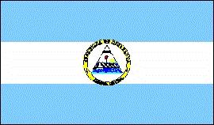
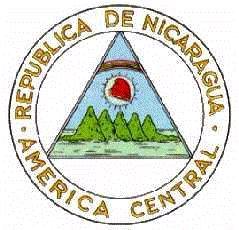

Nicaragua
|  |  |
Información general
Nombre oficial: República de Nicaragua
Área: 130 700 km²
Costas: 910 km
División política:16 Departamentos
Departamentos Capital
- Boaco Boaco
- Carazo Jinotepe
- Chinandega Chinandega
- Chontales Juigalpa
- Estelí Estelí
- Granada Granada
- Jinotega Jinotega
- León León
- Madriz Somoto
- Managua Managua
- Masaya Masaya
- Matagalpa Matagalpa
- Nueva Segovia Ocotal
- Río San Juan San Carlos
- Rivas Rivas
- Zelaya Bluefields
Unidad monetaria: Córdoba oro
1 Córdoba oro = 100 centavos (oro)
Idiomas: Español (oficial); misquito; algunas comunidades de origen extranjero hablan inglés, chino y unas doce lenguas más (no oficiales)
Fiesta nacional: 15 de septiembre, Independencia
Gentilicio: Nicaragüense
Hora oficial: GMT -6 horas (normal/verano)
Miembro de: ONU, OEA, MCCA, ALADI (observador)
Curiosidades
El lago de Nicaragua descubierto por Gil González Dávila en 1522 tiene una superficie de unos 8 000 Km² y en su interior se encuentran unas 800 islas o islotes. La mayor de ellas la de Ometepe o Altagracia tiene 296 Km². Entre la fauna que lo habita se encuentra el tiburón de agua dulce, especie única en el mundo.
El volcán más activo de Nicaragua es el Cerro Negro, al noroeste de Managua. El volcán ha estado activo en 1968, 1969, 1971, 1992 y 1995. La erupción de 1960 duró tres meses.
Información adicional en Internet.
Perfil Ecónomico
Perfil Demográfico
Población: 5.483.477 hab.
Densidad de
población: 40,7hab/km²
Fuente INEC http://www.inec.gob.ni/
Perfil Cultural
Alfabetismo: 64 %
Religión:
- Católicos: 94,0%
- Protestantes: 5,2%
- Otros: 0,8%
Algunas figuras notables:
- Alfonso Cortés (1893-1963). Poeta
- Pablo Antonio Cuadra (1912), Poeta y dramaturgo
- Rubén Darío (1867-1916).Poeta
- Salomón de la Selva (1893-1959). Poeta
- Luis A. Delgadillo (1887-1961). Compositor
- Miguel Larreynaga (1771-1916).Escritor y profesor
- Azarías Pallais (1885-1954). Poeta
- Armando Morales (1927).Pintor
Sistema de Gobierno
Constitución vigente: 9 de enero de 1987 (Última reforma en 2000)
Sistema ejecutivo: Presidente (elegido por voto directo para un período de seis años), auxiliado por el Vicepresidente y un Gabinete.
Sistema legislativo: Asamblea Nacional (noventa y dos representantes elegidos por voto directo para un período de seis años).
Sistema judicial: Corte Suprema (siete magistrados como mínimo), Cortes de Apelación y otras cortes. Consejo Supremo Electoral.
Gobierno subdivisional: Seis regiones y tres zonas especiales, subdivididas en dieciséis departamentos. Los municipios (134 en total) son electos por sufragio directo.
Aproximación histórica
Situada entre Honduras y Costa Rica, con costas al Mar Caribe y el Océano Pacífico se encuentra Nicaragua. Su territorio con un área de unos 130 000 kilómetros cuadrados, incluye unos 9 000 de lagos.
En tiempos precolombinos el imperio azteca se extendía hasta Nicaragua. Hacia la costa caribeña Nicaragua estuvo habitada por indios miskitos (también misquitos) que hablaban una lengua chibcha. En la costa del Pacífico estuvo habitada por los nicaraos, o niquirianos
Descubierta por Colón en su cuarto viaje en 1502 pasaría algún tiempo para que los conquistadores se establecieran definitivamente en ella. En 1522 González Dávila es detenido por la resistencia indígena y dos años más tarde Francisco Hernández de Córdoba iniciaría una expedición colonizadora.
Proclamó su independencia en 1821, incorporándose a México. En 1838 alcanzó su independencia. Fue ocupada entre 1912 y 1933 por los Estados Unidos de Norteamérica. En 1934 es asesinado el líder guerrillero Augusto Cesar Sandino, por orden de Anastasio Somoza comandante de la Guardia Nacional. Desde 1936 y durante 20 años gobierna el país con mano de hierro el dictador Anastasio Somoza, asesinado en 1956 su hijo lo sustituye en el poder y durante todo ese período la familia del dictador es la principal beneficiaria de la economía del país.
En 1972, Managua es devastada por un terremoto que causa la muerte de más de 6 000 personas. En 1978 se producen fuertes alzamientos y los guerrilleros del Frente Sandinista de Liberación Nacional vencen finalmente derrotando al régimen somocista en Julio de 1979.
En el territorio nicaragüense existen más de 40 volcanes. La población se asienta fundamentalmente en las tierras bajas al oeste, en la costa con el Pacífico.
La principal actividad es la agricultura con algodón, caña de azúcar y café. Posee recursos minerales como oro, plata, cinc y plomo.
«-- ir al comienzo
«-- regresar